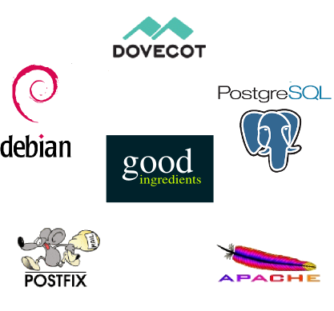

Ingredients
Ingredients The core ingredients being used to build a reliable infrastrucutre are as follows:
- Debian 5.0 Lenny
- Postfix 2.5
- PostgreSQL 8.3
- Dovecot 1.0
- Apache 2.0
We are also making use of KVM and OpenVZ virtualisation technologies. Let's look at each of these choices and see what makes it a good choice for a server infrastructure.
For a definition of "good" see What is good?). In this page I'll discuss the reasoning for the component choices for the 0.1 release of Good Ingredients. Of course, things change over time and if it becomes apparant that another ingredient would be significantly more "good" then a future release of the Good Ingredients guide could use that instead but it would require the proponent to write a guide allowing an existing user of an old ingredient to migrate. To put this in context, the new ingredient would have to be of so much value that it would be worth 3aims Ltd (the company behind the Good Ingredients project migrating all existing services to the new platform). If we aren't convinced we want to, the old ingredient will remain.
Debian 5.0
Alternative Choices: OpenSolaris, FreeBSD, CentOS, Ubuntu Hardy Heron
As a base platform OpenSolaris makes a compelling case. It has built-in ZFS (a snapshot capable filesystem) and virtualization via Zones. The problem is that its adoption isn't as broad as a Linux platform. That means there are less bloggers, technologists and full time professionals using the platform and as a result it can be harder to get started with. Also, compared to Linux there is slightly less hardware support and more obscure technologies are less likely to work simply because OpenSolaris is less in the minds of small development teams as a platform. So whilst OpenSolaris might technically be a great basis for a server infrastrucutre, we're going to go with a Linux platform.
The Linux world is packed with choice from commercially-backed distributions like Red Hat Enterprise and Suse to community-focused ones like Debian. If you are building a Good Ingredients server it is anticipated that you are more likely to be the sort of person who would rather work with a helpful online community rather than a commercial company (otherwise you could contact RedHat, Novell, Oracle etc to build your infrastructure for you). We will therefore choose a community-focused distribution. We'll want a distribution which doesn't change to often, after all, building a server infrastructure is a non-trivial task and, unlike a Desktop environment, you won't want to change it every 6 months. This leaves Debian or a Long Term Support edition of Ubuntu as the obvious choices. While it can often be easier to get Desktop-related information for Ubuntu, my experience has been that the Debian community is second to none when it comes to server information with excellent resources and blogs. For that reason, and for Debian's strict openess standards ensuring your freedom we'll chose Debian.
We have also rejected the *BSDs here for much the same reason as OpenSolaris has been dismissed: there is just more information online about Linux and when you hit an obscure problem under Linux there is simply more chance of Google finding the answer because sheer volume of numbers means it is more likely someone somewhere will have encountered your problem.
Postfix 2.5
Alternative Choices: Exim 4.69
This is a bit of a tough call because Exim is actually the default on Debian 5.0 which is the operating system we've chosen, Postfix generally seems to be better documented in tutorials online. Beyond its lack of "default" status on Debian there doesn't seem to be a major drawback to using Postfix so it just pips Exim to the lead.
PostgreSQL 8.3
Alternative Choices: MySQL 5.0
Both MySQL and PostgreSQL are popular and powerful databases which makes this one a touch choice. Most popular open source software integrates with both.
I see MySQL as being a lighter database and PostgreSQL as being more powerful and robust. MySQL was an appealing choice until recently because it had the ability to easily scale via its built in replication facilities but recent technologies such as Cassandra scale a huge amount better so choosing MySQL as a middle ground is no longer so appealing. Instead we are going to choose a database that is good at doing relational database type things and stick with PostgreSQL. Of course PostgreSQL also has master slave replication abilities to via Slony-I and similar too.
Interestingly, I don't see the recent fragmentation of the MySQL community into MySQL, MariaDB, Drizzle and the like as such an issue. MySQL 5.0 remains the same good product regardless of how other spin-offs are doing, it just casts doubt over future releases.
Dovecot 1.0
Alternative Choices: Courier
Both packages provide IMAP and POP access to Mailboxes and support TLS but Courier doesn't support a fallback MySQL server for its configuration in the case where the primary fails so Dovecot is chosen in place. Dovecot also provides its own local delivery agent which can index mail as it is being delivered for faster searching by IMAP clients.
Apache 2
Alternative Choices: Nginx, Lighttpd, etc
There are many webservers and in all honesty performance is similar for all of them. Apache is the most widely respected and most widely documented so we choose it over the others. If you have specific knowledge of a different web server which you'd prefer to use, feel free to use that instead.
Apache's main advantage beyond its reputation and breadth and depth of documentation are that it has a wide range of modules which provide all sorts of useful functionality for emedding scripting languages, proxying requests, dealing with authentication and authorisation etc. Using Apache is akin to using a swiss army knife and that can be very useful if you are at all unsure about the future needs of a web application.